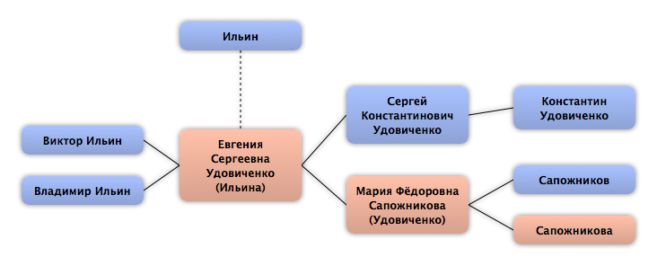

Домой
Домой
 Люди
Люди
 Семьи
Семьи
 Источники
Источники
 Диаграммы
Диаграммы
 Статистика
Статистика
Ильин

Контекст

Родители
| Отец | Дата рождения | Мать | Дата рождения |
|---|
Родители и дети
| Партнёры | Дата рождения | Дети |
|---|---|---|
 Евгения Сергеевна Удовиченко Евгения Сергеевна Удовиченко
|
Виктор Ильин
Владимир Ильин
|
События
| Тип события | Дата | Место | Описание |
|---|---|---|---|
| Место проживания | Пятигорск, Россия |
Факты
Медиа
Примечание
Злодей прокурор
Источники
Родство
| Имя | Степень родства | Дата рождения | Место рождения | Дата смерти | Место смерти |
|---|---|---|---|---|---|
| Партнёров | |||||
| Партнёр или жена | |||||
| Дети | |||||
| Сын | |||||
| Сын | |||||